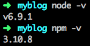

1.1.1 安装 Node.js
有三种方式安装 Node.js：一是通过安装包安装，二是通过源码编译安装，三是在 Linux 下可以通过 yum|apt-get 安装，在 Mac 下可以通过 Homebrew 安装。对于 Windows 和 Mac 用户，推荐使用安装包安装，Linux 用户推荐使用源码编译安装。
Windows 和 Mac 安装：
第一步：
打开 Node.js 官网，可以看到以下两个下载选项：

左边的是 LTS 版，用过 ubuntu 的同学可能比较熟悉，即长期支持版本，大多数人用这个就可以了。右边是最新版，支持最新的语言特性（比如对 ES6 的支持更全面），想尝试新特性的开发者可以安装这个版本。我们选择左边的 v6.9.1 LTS 点击下载。
小提示：从 http://node.green 上可以看到 Node.js 各个版本对 ES6 的支持情况。
第二步：
安装 Node.js，这个没什么好说的，一直点击 继续 即可。

第三步：
提示安装成功后，打开终端输入以下命令，可以看到 node 和 npm 都已经安装好了：

Linux 安装：
Linux 用户可通过源码编译安装：
|
|
注意: 如果编译过程报错，可能是缺少某些依赖包。因为报错内容不尽相同，请读者自行求助搜索引擎或 stackoverflow。
1.1.2 n 和 nvm
通常我们使用稳定的 LTS 版本的 Node.js 即可，但有的情况下我们又想尝试一下新的特性，我们总不能来回安装不同版本的 Node.js 吧，这个时候我们就需要 n 或者 nvm 了。n 和 nvm 是两个常用的 Node.js 版本管理工具，关于 n 和 nvm 的使用以及区别，这篇文章 讲得特别详细，这里不再赘述。
1.1.3 nrm
nrm 是一个管理 npm 源的工具。用过 ruby 和 gem 的同学会比较熟悉，通常我们会把 gem 源切到国内的淘宝镜像，这样在安装和更新一些包的时候比较快。nrm 同理，用来切换官方 npm 源和国内的 npm 源（如: cnpm），当然也可以用来切换官方 npm 源和公司私有 npm 源。
全局安装 nrm:
|
|
查看当前 nrm 内置的几个 npm 源的地址：

切换到 cnpm：